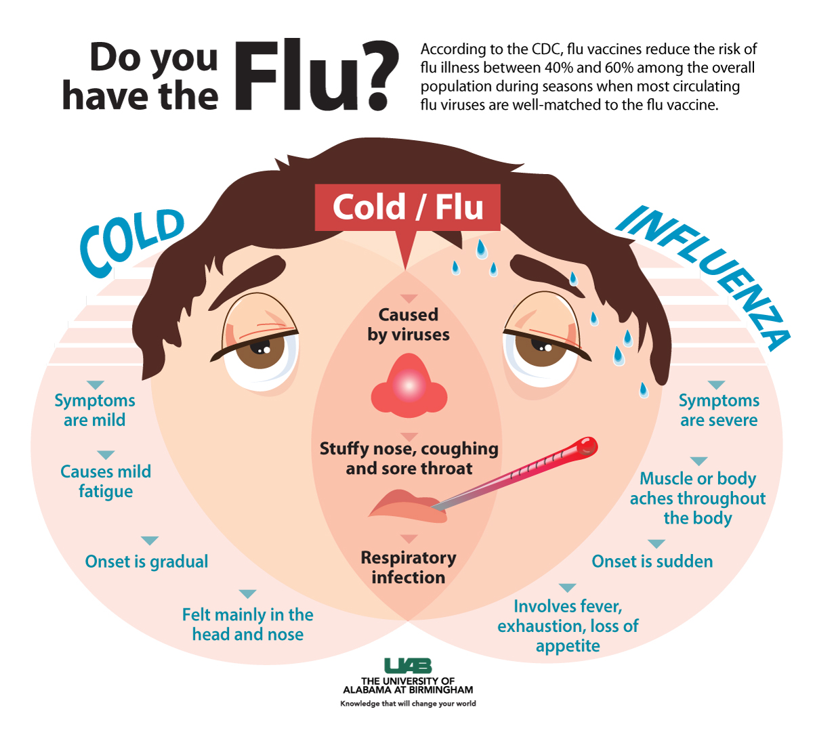
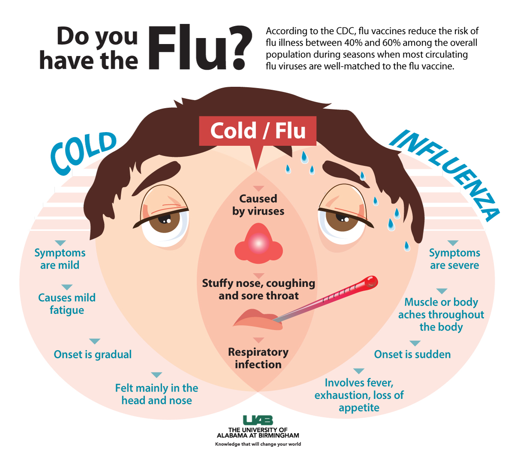

Why?
The flu is a serious illness and with proper and early prevention can reduce the risk of its severity. Other products that try to limit barriers to vaccination create new barriers themselves. Nasal flu vaccinations aren’t available to many groups of individuals that are more susceptible to disease and microneedle patches increase the risk of side effects on the user. Our product is make flu vaccination quick,easy,and painless.
Plans for Sustainability
Modern vaccination manufacturing contributes to pollution. Quick vax wants happy people and a happy environment too. We plan to create artificial antigens instead of using chicken eggs in the process,we will use biodegradable plastic in our products,and will not use thimerosal, a chemical used in current vaccines.
Mathematics
Influenza trends can be shown through graphs, statistics and tables. For example 25% of the adults we spoke to around campus that we interviewed were vaccinated. Another way to show data is through graphs and tables that depitc an overall story. One example of this is how many people are vaccinated against the influenza. The graph below depicts trends of immunized adults, elderly and young. The graph shows that the eldely population from ages 65+ are getting more vaccinations than the youger population. This may be because their bodies are more succceptible to becoming sick because their immune systems are naturally weaker. Becuase the percentage of vaccinated elderly does not exceede 70% herd immunity is not plausible. Herd immunity is when a certain percentage of the population is vaccinated, thus the remainder of the population is also protected even if they were never vaccinated. All of the youger populations ages 18-64 are all vaccinated at less than 50%.

Source:https://www.cdc.gov/flu/fluvaxview/coverage-1617estimates.htm